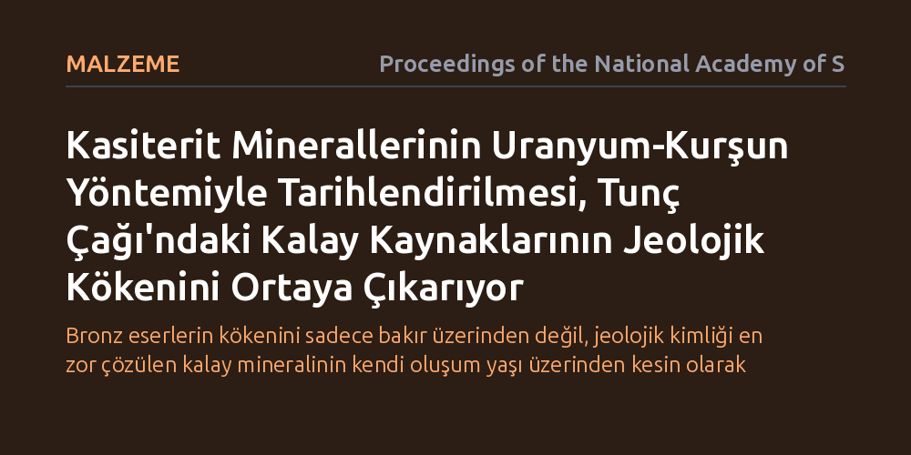

MALZEME · Proceedings of the National Academy of Sciences · 2026-10-12
Araştırmacılar, Tunç Çağı'nda bronz üretimi için hayati olan kalayın hangi madenlerden sağlandığını belirlemek amacıyla kasiterit mineraline doğrudan uranyum-kurşun tarihlendirmesi uyguladı. Farklı cevher yataklarının jeolojik yaş imzalarını saptayan bu yöntem, antik ticaret ağlarını ve Shang Hanedanı'nın kalay kaynaklarını haritalandırmayı sağladı.
Bronz eserlerin kökenini sadece bakır üzerinden değil, jeolojik kimliği en zor çözülen kalay mineralinin kendi oluşum yaşı üzerinden kesin olarak takip edebileceğimizi gösterir.

Tunç Çağı, insanlık tarihinin en köklü dönüşümlerinden birini temsil eder. Bakır ile kalayın belirli oranlarda karıştırılmasıyla elde edilen bronz; hem dayanıklı aletlerin hem de görkemli törensel objelerin temel malzemesiydi. Makalede belirtildiği gibi, "Kalay, Tunç Çağı toplumları için günümüzün ham petrolü kadar stratejikti." Ancak bakır yatakları yer kabuğunda nispeten geniş bir alana yayılmışken, kaliteli kalay madenleri son derece az sayıda ve belirli jeolojik bölgelerde toplanmıştır.
Özellikle antik dünyanın en üretken metal üreticisi olan Çin'deki Shang Hanedanı gibi uygarlıklar, tonlarca bronz üretmek için muazzam miktarda kalaya ihtiyaç duyuyordu. Arkeologlar, yüzyılı aşkın süredir bronz objelerin kimyasal bileşimini ve bakır veya kurşun izotoplarını inceleyerek bu metallerin izini sürmeye çalıştı. Ne var ki madenlerin eritilip karıştırılması sırasında kurşun imzalarının değişebilmesi ve kalayın jeolojik kökenine doğrudan ulaşılamaması, kalayın nereden geldiği sorusunu arkeolojinin en büyük gizemlerinden biri olarak bıraktı.
Araştırmacılar bu düğümü çözmek için kalayın ana cevheri olan kasiterit (SnO2) mineralini odağa aldı. Kasiterit, kristal yapısı oluşurken içine az miktarda uranyum hapseden, buna karşılık başlangıçta neredeyse hiç kurşun barındırmayan dayanıklı bir mineraldir. Zaman geçtikçe mineralin içindeki uranyum atomları bilinen ve sabit bir yarı ömürle kurşun izotoplarına bozunur. Dolayısıyla kasiterit kristalindeki uranyum ve kurşun oranları ölçüldüğünde, cevherin kaç milyon yıl önce oluştuğunu veren hassas bir jeolojik saat elde edilir.
Çalışmada kullanılan lazer aşındırmalı indüktif eşleşmiş plazma kütle spektrometrisi (LA-ICP-MS) yöntemi, örneği toptan eritip tahrip etmeden, mikron ölçeğindeki lazer atışlarıyla mineral taneciklerinden numune almayı mümkün kıldı. Bu mikroskobik analiz tekniği sayesinde, tek bir mineral kristali içindeki izotopik oranlar doğrudan yerinde ölçülerek cevherin oluşum yaşı yüksek bir doğrulukla hesaplandı.
Yapılan tarihlendirmeler, Avrasya ve Çin coğrafyasındaki kalay yataklarının yer kabuğunun farklı evrelerinde oluştuğunu ve bu sayede her yatağın kendine özgü bir jeolojik yaş damgasına sahip olduğunu ortaya koydu. Örneğin bazı madenler yüz milyonlarca yıl önceki Paleozoik döneme tarihlenirken, diğerleri Mezozoik dönemdeki magmatik hareketliliklerle meydana gelmişti. Bu belirgin yaş farkları, daha önce kimyasal veya izotopik olarak birbirinden ayırt edilemeyen kalay yataklarını kesin çizgilerle ayrıştırdı.
Elde edilen bu jeokronolojik çerçeve, Shang Hanedanı döneminde kullanılan kalayın olası kaynaklarını daraltmak için güvenilir bir zemin sağladı. Böylece antik metalurji merkezlerine taşınan kalay cevherlerinin hangi maden havzalarından çıkarıldığı, yatakların jeolojik oluşum yaşlarıyla doğrudan eşleştirilebilir hale geldi.
Bu çalışma, arkeometallurjide uzun süredir devam eden "kalay sorunu"na jeoloji temelli ve nesnel bir çözüm sunuyor. Eserlerin içinde korunmuş kasiterit kalıntılarını doğrudan tarihlendirerek, metal ticaretinin izini sadece varsayımlara dayalı modellerle değil, doğrudan fiziksel ve jeolojik kanıtlarla sürmek artık mümkün hale geliyor.
Geliştirilen bu yöntem, yalnızca Çin'deki Shang Hanedanı için değil, Akdeniz, Yakın Doğu ve Avrupa Tunç Çağı ticaret ağlarının haritalandırılması için de evrensel bir kılavuz niteliği taşıyor. Uygarlıkların birbirleriyle kurduğu hammadde tedarik zincirleri ve uzak coğrafyalar arasındaki ticaret rotaları, minerallerin jeolojik yaşı üzerinden daha net bir şekilde aydınlatılabilecek.